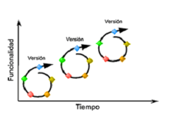
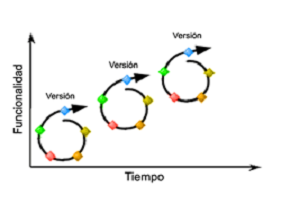

Descripción Profesional
Soy una persona con buena disposición para trabajar en equipo, tengo buen manejo de relaciones interpersonales, procuro por estudiar a fondo las necesidades de los proyectos en los cuales participo, para dar buenos aportes y alternativas realistas concernientes a la solución. No tengo problema en ser parte de un grupo de trabajo como desarrollador, consultor, o líder de proyecto.
Dentro de los factores de éxito en el desarrollo y cumplimiento de un proyecto se encuentra la planeación y un cronograma de actividades realista y alcanzable. Por lo cual procuro por definirlo de forma clara precisa y con tiempos razonables de entrega.


 
